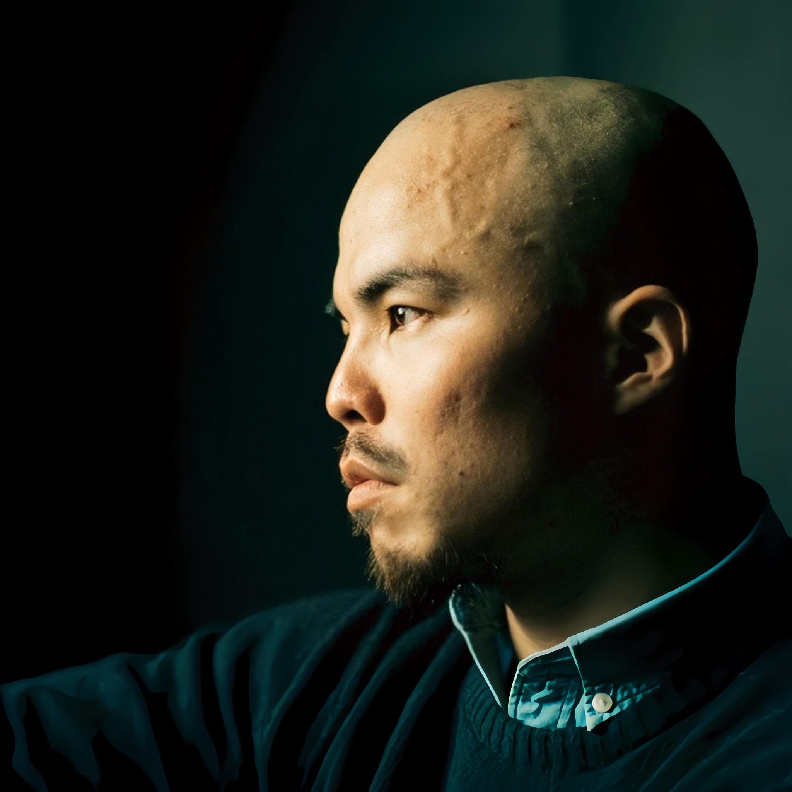

KuanHsiang Liu (Kent)
Chinese Language ✦ AI & PBL ✦ Embodied & Nature-Based Learning

Personal Summary
I am a native Mandarin-speaking interdisciplinary educator who brings together three rarely coexisting identities: AI entrepreneur, nationally awarded performing artist, and bilingual teacher with two years of full-time classroom experience in Thailand.
When I read your school's educational philosophy — Dharma & The Ten Paramitas, AI as a Second Brain, The Valley Classroom, PBL — what I felt was not simply "this is a good school," but rather "this is the educational environment I have been searching for."
My entire life path — from my great-grandfather's legacy as a blind fortune teller, to twenty years of disciplined body-as-language performing arts practice, to building real products with AI every single day, to my long-term exploration of BaZi and the nature of consciousness — all points in the same direction: education is not merely the transfer of knowledge, but the process of helping a person know themselves, connect with nature, use tools wisely, and live with wisdom.
This is exactly what your school is doing. I want to be part of this team.
How I Align with Your Four Educational Pillars
My family lineage is itself a thread of spiritual inheritance — my great-grandfather was a blind fortune teller, my grandfather a jazz musician, my father a photographer. From them I inherited an unusually acute sensitivity to sound, sight, and intuition — faculties that became the foundation of all my creative and body-based work.
I have long practiced and explored Eastern mind-body philosophy, including:
- BaZi (Chinese Astrology) — years of self-study and personal practice in traditional Chinese cosmology
- Human Design — as a tool for self-knowledge and for guiding students
- Body awareness and meditation — throughout twenty years as a professional dancer, body awareness and breathwork have been my daily practice
- Consciousness and the nature of reality — an ongoing exploration of Simulation Theory, metaphysics, and the essence of consciousness
My signature work KIDS uses a recording of my mother's final words in a hospice ward as its score — this piece is fundamentally about life, death, letting go, and love. It was not a performance. It was a sustained gaze at the truth of life.
For me, the Dharma and the Ten Paramitas are not a curriculum to be studied — they are the underlying language of my creative work and my life. I can walk this path alongside students not merely as a teacher, but as a genuine practitioner.
This is my most distinctive strength — I am not a teacher who "understands AI concepts." I am a founder who builds real products with AI every single day.
I am the solo founder of Grapply, an AI SaaS platform I built and currently operate using Claude Code, Cursor, ChatGPT, Gemini, and other AI development tools. My entire entrepreneurial journey is itself a massive PBL project — from product design, AI workflow architecture, full-stack implementation, to go-to-market strategy, all executed independently.
The PBL + AI learning experiences I can bring to students:
- "AI as my co-builder" — students describe their ideas, AI helps them bring those ideas to life. In a single semester, a student can complete: a personal website, a simple chatbot, an AI-illustrated picture book, an AI-composed theme song, and an AI-generated animated short film.
- AI Literacy — how to talk to AI, how to evaluate AI's answers, when to use AI, and when not to. This is a foundational skill every student needs in 2026.
- AI x Chinese creative projects — students describe a story to AI in Mandarin, generate illustrations, compose a soundtrack, produce an animation, record Chinese voiceover. Language learning and AI creation become one unified experience.
Twenty years as a professional dancer have taught me one thing profoundly: the body is the most direct path to knowing the world.
My teaching methodology is itself a practice of "learning through the body in nature":
- Embodied Language Learning — students learn measure words through physical movement, memorize tones through rhythmic clapping, practice conversation through improvisation games
- Creative Movement — through improvisation, contact improvisation, and body awareness, students reconnect with their own bodies and perceptions
- Outdoor experiential learning — leading body awareness, breathwork, and improvisational creation in natural environments, extending learning from the classroom into the valley
I also maintain long-term personal practices in:
- Tung's Acupuncture — a distinctive acupuncture system focusing on limb and torso points, used for body conditioning and pain management
- Dancer's self-healing massage — myofascial release using massage balls and foam rollers
- Restorative Yoga and Vinyasa Flow Yoga — as daily practices for maintaining physical wellbeing
These are not extracurricular activities — they are the core tools through which I guide students to "know the world through the body." In the valley environment of Mae Taeng, these capabilities would be maximized.
My entire professional life is a living textbook of the 56 DELTAs:
- Cognitive: Problem analysis, systems thinking, and critical reasoning developed through AI entrepreneurship
- Interpersonal: A decade of performing arts teamwork, cross-cultural communication through international touring across six countries
- Self-Leadership: Independent entrepreneurship, self-directed learning, building an AI product from zero
- Digital: First-hand, daily hands-on experience with AI tools in real production environments
I do not need to teach students "what future-ready skills are" — I can show them how a person lives an entire life using these skills. That is more powerful than any textbook.
Teaching Experience
Full-Time English & Mandarin Teacher
Trakan Phuet Phon School, Ubon Ratchathani, ThailandTwo years of full-time bilingual teaching experience. Co-teaching with Thai partner teachers. Designed immersive lessons integrating movement, music, and storytelling. Deeply familiar with Thai school culture, term cycles, and parent communication.
Arts Educator & Independent Artist
Kent Liu StudioIndependent artist, leading creative body workshops for children and teenagers. Cross-age teaching experience from early years through adults.
Choreographer & Arts Educator
Cloud Gate Culture & Arts Foundation / HORSE Dance Theatre, TaipeiOver a decade at Taiwan's two most prestigious performing arts institutions. Extensive creative arts education for children and young people. Curriculum design, camp planning, teacher training.
Honors & Awards
15th Taishin Arts Award — Grand Prize for Performing Arts (2017)
Taiwan's highest honour in the arts. Awarded for KIDS, a work scored with a recording of my mother's final words in a hospice ward. International tours to Denmark, Canada (PuSh International Performing Arts Festival), Germany (Internationale Tanzmesse NRW), Beijing, Hong Kong, and Singapore.
Four-time Taishin Arts Award Nominee (2013 -- 2016)
Taoyuan Film Festival "Taiwan Award" Nominee (2022)
SH0VA (2022)
Core stage visuals built entirely with generative AI — one of the first works in Taiwan to integrate AI into professional theatre.
What I Can Bring to Your Community
Education & Languages
English: Advanced (C1) — fully capable of English-medium instruction
Thai: Basic — currently learning
Why I Belong in This Valley
Most teachers can fill one teaching role.
I can simultaneously be — a Chinese teacher, an AI mentor, an artist who guides students to know nature through their bodies, and a fellow practitioner who walks alongside students in the depths of life.
Your four educational pillars — Dharma, AI, Nature, Future-Ready Skills — are not four concepts I would need to "learn." They are what I have been living for the past twenty years.
I am currently based in Rayong, Thailand, and I am available to travel to Chiang Mai for an interview and a teaching demonstration at your convenience. I also very much look forward to the opportunity to walk into the Mae Taeng valley in person and feel that space for myself.
If these words resonate with something you feel, that resonance is exactly what I felt while writing them. I look forward to meeting in the valley.